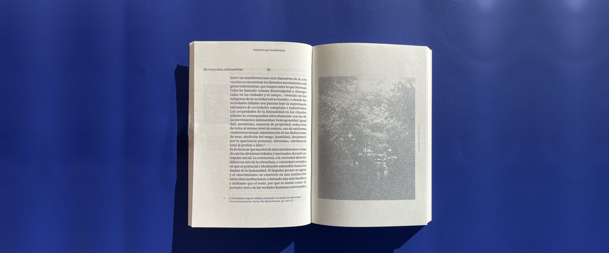

01 Intro
Across history, the one thing we have consistently maintained is the need to create rituals that bring us together as a society.
Why we still need it
By exploring the symbols, elements, and rhythms that make ritual possible, we begin to understand why we continue to need it. Even today, amid productive routines and weakened social bonds, we keep searching for moments that allow us to belong, transform, and make the passage of time visible.
Editorial concept
Whether it is a grandmother’s birthday celebration or a "coming of age" ceremony among the Swazi people, we have never stopped creating rites. Yet we have lost the ability to pause and become aware of their meaning, depriving ourselves of the opportunity to mark history.
Different schools of thought have pointed out that rituals serve an essential function in human life. They not only create spaces for encounter and belonging, but also give shape to time, organize experience, and allow meanings to be shared with others. When a ritual loses its significance or disappears, the symbolic structures that sustain communal life are weakened as well.
02 The book
The architecture of ritual
The graphic concept reflects the "architecture of ritual" through the rhythm of the book. Drawing on Arnold van Gennep’s structure of rites of passage, the reading flow alternates between continuity and interruption, translating the process of separation, transformation, and reintegration into the editorial experience.
Four reading levels
The book is structured through four reading levels. The editorial voice guides the reader through chapter introductions, while the essays provide the theoretical framework. Poems and silver-printed images offer an experiential reading of ritual, interrupting the academic discourse with a more intimate, symbolic, and emotional perspective. Like ritual experiences, whose memories often remain fragmented and elusive, the images move away from literal representation to evoke what cannot be fully explained.
03 the ink
The images of rituals are printed in silver ink. Some rituals are so intense that they are hard to remember clearly: like ritual experiences, whose memories often remain fragmented and elusive, the silver images move away from literal representation to open a less structured, almost dreamlike space, evoking what cannot be fully explained. The poems do the same at certain moments of the book.

04 the paper
Curious Matter Adiron Blue, 270 g/m² (Arjowiggins).
05 Typeface
Type specimen
Source Serif 4 — titles
Source Serif 4 — text
A Pinch of Blood and a Glass of Sanguaza
Whether it is a grandmother’s birthday celebration or a "coming of age" ceremony among the Swazi people, we have never stopped creating rites.
Source Serif 4 Regular · 17 / 26
Source Serif 4 MEDIUM · titles
ABCDEFGHIJKLMNÑOPQRSTUVWXYZ
abcdefghijklmnñopqrstuvwxyz 0123456789
ABCDEFGHIJKLMNÑOPQRSTUVWXYZ abcdefghijklmnñopqrstuvwxyz 0123456789 & ¿? ¡! —
06 Credits
- Editorial direction, art direction & design
- Antonia Ilic Bromberg, Francesca Garre Buscaglia
- Research & archives
- Antonia Ilic Bromberg, Francesca Garre Buscaglia
- Typeface
- Source Serif 4, by Frank Grießhammer
- Paper
- Munken Print Cream 80 g/m², Curious Matter Adiron Blue 270 g/m²
- Printing
- Tecnoart, Barcelona, 2026
- Acknowledgements
- Pol Nadal (Studiopol), Josep Román (Affaire), Laura Meseguer, Ane Guerra, María Dolores Soriano, Marc Panero